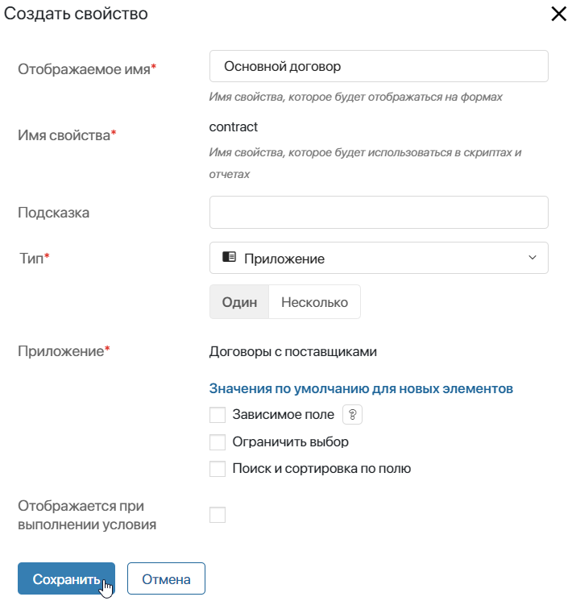
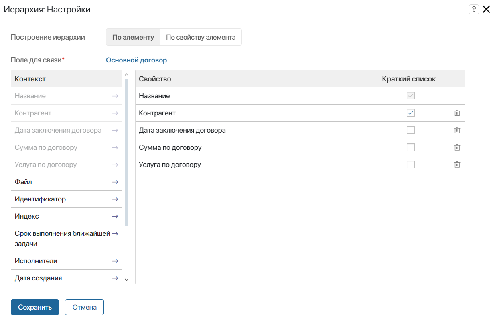
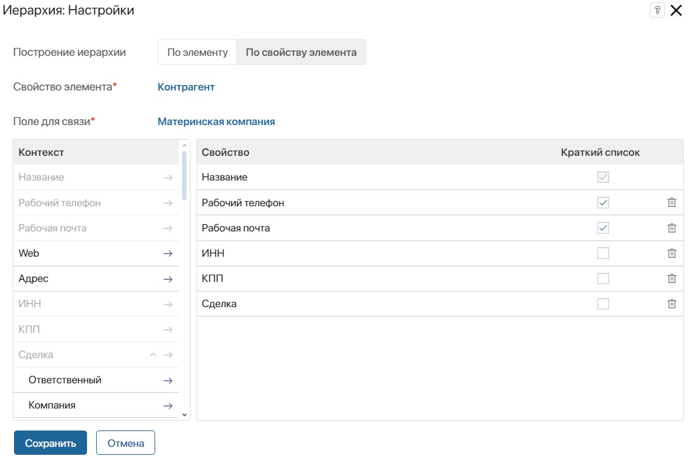
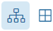
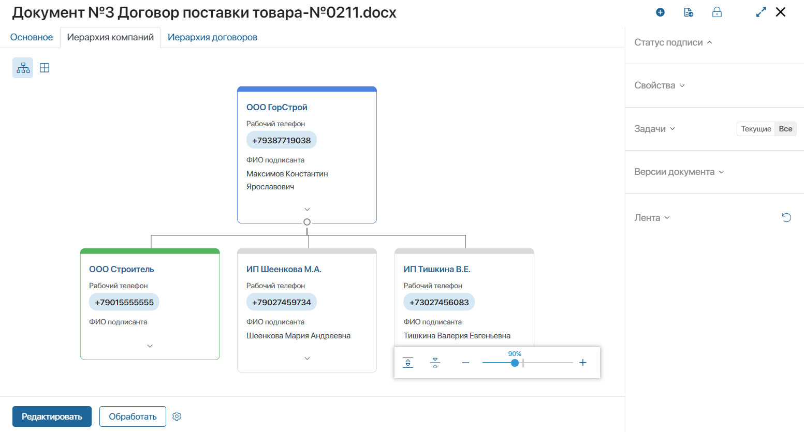
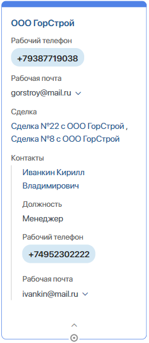
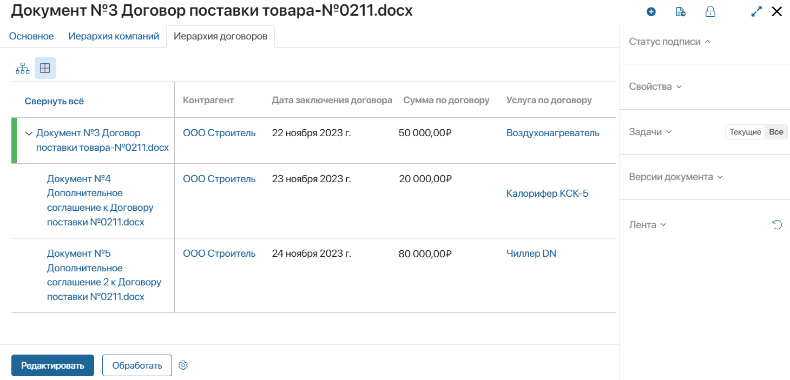

Виджет отображает связанные между собой элементы одного приложения в виде иерархической структуры. Связь устанавливается следующим образом: в карточке одного элемента выбираются относящиеся к нему записи из этого же приложения.
Например, для приложения Компании таким образом можно создать структуру организации, указав в карточке материнскую компанию и её дочерние филиалы.
начало внимание
Виджет доступен при активации одного из платных решений CRM, в которые входит отображение иерархической структуры контрагентов. Использовать его смогут только пользователи с лицензией решения.
конец внимание
В карточке элемента иерархию можно отображать в виде дерева или таблицы. При этом в настройках виджета выбираются поля, которые будут показываться для записей иерархии в таблице и дереве.
Иерархию рекомендуется отображать на форме в отдельной вкладке. Размещать виджет можно как на форме приложения, для которого настраивается иерархия, так и в карточке другого приложения. В зависимости от этого отличаются настройки виджета.
Настройка иерархии в приложении
Для отображения структуры сначала настраивается контекст приложения. Для этого в него добавляется поле для связи типа Приложение. Оно будет ссылаться само на себя. В этом поле на форме одного элемента пользователь сможет указать другой элемент из этого же приложения.
Затем на форму приложения добавляется и настраивается виджет Иерархия.
Рассмотрим два способа настройки иерархии на примерах. В приложении Договоры на разных вкладках будет отображаться:
- Структура всех договоров и дополнительных соглашений. Элементы хранятся в приложении, для которого настраивается иерархия.
- Иерархия контрагентов из этих договоров. Элементы хранятся в другом приложении — Компании.
Настройка контекста для иерархии с нуля
Чтобы отобразить структуру договоров, в приложение Договоры необходимо добавить поле для связи его элементов между собой:
- Нажмите на значок шестерёнки рядом с названием приложения Договоры и выберите пункт Настройка формы.
- Создайте свойство типа Приложение, включите опцию Один и выберите приложение, форму которого настраиваете. Сохраните свойство.

- Включите расширенный режим настройки форм, добавьте созданное свойство на все формы приложения и сохраните настройки.
Настройка контекста для иерархии в приложении «Компании»
В нашем примере контрагент в договоре подтягивается из приложения Компании. Оно входит в решение ELMA365 CRM. В нём по умолчанию созданы следующие поля для связи элементов и настройки иерархии:
- Материнская компания — поле с включённой опцией Один, для указания главного офиса организации;
- Дочерние компании — поле с включённой опцией Несколько, для выбора всех филиалов компании.
Чтобы пользователи могли связывать компании друг с другом, вынесите эти свойства на формы приложения:
- Нажмите на значок шестерёнки рядом с названием приложения Договоры и выберите пункт Настройка формы.
- Поскольку для приложения включён расширенный режим настройки форм, добавьте свойства Материнская компания и Дочерние компании на вкладки Создание, Просмотр, Редактирование.
- Отключите для свойств опцию Только для чтения, чтобы на формах пользователи смогли не только создавать новые компании, но и выбирать их из существующих записей.
- Сохраните настройки.
Настройки виджета «Иерархия»
Следующим шагом настраивается форма приложения, на которой необходимо отобразить структуру.
начало внимание
Виджет Иерархия рекомендуется размещать на форме в отдельной вкладке.
конец внимание
В нашем примере настраиваются иерархии договоров и контрагентов, поэтому на форме приложения Договоры создаются две вкладки. На каждую из них добавляется виджет и настраивается по-разному:
- Перейдите в дизайнер интерфейсов формы просмотра приложения.
- Добавьте виджет Вкладки на поле для моделирования и задайте название для него.
Для нашего примера в карточке договора создаются вкладки: Иерархия договоров и Иерархия компаний.
- Перейдите на созданную вкладку, нажмите + Виджет и выберите виджет Иерархия.
Дальнейшие настройки виджета будут отличаться в зависимости от того, структуру какого приложения нужно отобразить на настраиваемой форме. Доступно две опции построения иерархии: По элементу и По свойству элемента.
Иерархия по элементу
Построение иерархии по элементу выбирается, если вы хотите отобразить структуру того приложения, форма которого настраивается в данный момент.
В нашем примере в приложении Договоры структура договора и его дополнительных соглашений будет отображаться на вкладке Иерархия договоров. В настройках виджета, размещённого на этой вкладке, указываются параметры:

- Построение иерархии — выбирается опция По элементу;
- Поле для связи* — выбирается свойство типа Приложение, в котором пользователи указывают связанный элемент из этого же приложения. Для договоров это поле Основной договор, созданное ранее на шаге настройки контекста.
После этого задайте настройки отображения иерархической структуры в виджете.
Иерархия по свойству элемента
Построение иерархии по свойству элемента выбирается, если на форме одного приложения нужно отобразить структуру другого приложения, связанного с ним.
В нашем примере в карточке договора в поле Контрагент указывается элемент из приложения Компании. Поскольку договор и компания связываются между собой, на форме приложения Договоры можно отобразить структуру выбранной в поле компании.
В настройках виджета, размещённого на вкладке Иерархия компаний, указываются параметры:

- Построение иерархии — выбирается опция По свойству элемента;
- Свойство элемента* — из контекста текущего приложения выбирается поле типа Приложение, которое ссылается на связанный элемент. В приложении Договоры — это поле Контрагент, которое ссылается на компанию. Иерархия связанной компании-контрагента отобразится на форме договора;
- Поле для связи* — из контекста приложения, связанного с текущим и выбранного в предыдущем поле, выбирается свойство типа Приложение с включённой опцией Один. Для нашего примера — из приложения Компании указывается созданное по умолчанию поле Материнская компания.
После этого задайте настройки отображения иерархической структуры в виджете.
Настройка отображения элементов в иерархии
Следующим шагом в настройках виджета для обоих способов построения иерархии задаётся внешний вид элементов из структуры на форме:
- Укажите, какие свойства приложения будут отображаться в виде дерева и таблицы. Для этого перетащите нужные поля из столбца Контекст.
- Выберите, какие свойства будут показываться в свёрнутых карточках дерева. Для этого напротив добавленных полей включите опцию Краткий список.
Чтобы удалить добавленное из контекста свойство, напротив его названия нажмите значок корзины.
После завершения настроек виджета сохраните указанные параметры.
Чтобы форма стала доступна пользователям, нажмите Сохранить и Опубликовать на верхней панели дизайнера интерфейсов.
Отображение иерархии на форме
В виджете может отображаться до 100 связанных между собой элементов. На форме иерархию можно просматривать в виде дерева и таблицы. Для переключения способов отображения данных в виджете используются значки .
Элементы иерархии подсвечиваются разными цветами. Для головного элемента используется синий цвет. Запись, карточка которой открыта или связана с текущим элементом, выделяется зелёным. Остальные компоненты структуры обозначены серым.
С полями в карточках элементов иерархии можно взаимодействовать. Например, нажать на поле типа Электронная почта для перехода к написанию письма или на ссылку в поле типа Приложение, чтобы открыть карточку указанной записи.
При построении иерархии компаний в вынесенном поле контакта автоматически показывается его имя, должность, телефон и рабочая почта. Если контактов указано несколько, отображаются все связанные записи.
Дерево
При отображении в виде дерева в виджете показываются блоки связанных элементов с кратким списком полей.

Чтобы посмотреть карточку и полный список полей, указанный в настройках виджета, нажмите на значок стрелки в блоке.

В элементах с зависимыми записями отображается значок . Нажмите на него, чтобы развернуть или свернуть соответствующую ветку дерева.
В правом нижнем углу виджета располагается панель управления деревом. С её помощью можно изменять масштаб дерева, сворачивать и разворачивать всю его структуру.
Перемещаться по дереву на форме можно с помощью перетаскивания карточек элементов методом Drag-and-Drop. Таким образом вы сможете просматривать записи, если в дереве отображается объёмная иерархия.
Таблица
Таблица иерархии состоит из полного списка полей, выбранных в настройках виджета. Вы можете сворачивать и разворачивать отображаемую структуру. Для этого нажмите на кнопку в первом столбце таблицы.
